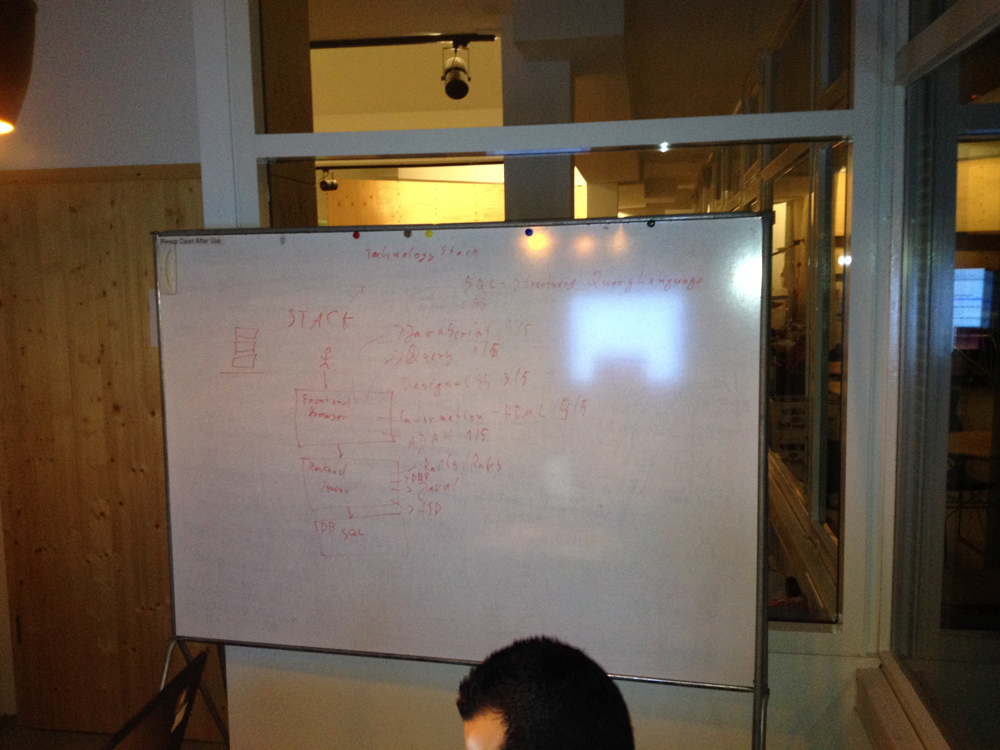

ReDI Ruby Class - Group 1
Wed 2016-03-23 (Peter)
Today we expand on the blog application started on Sunday. Use your copy, or take this version as your baseline: blog-2016-03-20.zip
- Open panel
- What did you build recently?
- What did you learn recently?
- Populating the database
- Add 3 records to the database
- Stretch goal: add 300 records to the database
- Revisiting show and index views
- Show list of all posts in index page
- Stretch goal: abbreviate blog post body on index page
- Show details of one post in show page
- Short break
- Add links between pages
- Link from index page to individual show pages
- Link from show page back to index
- Stretch goal: add next / prev links to show page
- Apply common header to all pages
- Redirect to 404 page if post cannot be found
- Stretch goal: Make a funny 404 page
Assignment for Tomorrow
- Use your HTML and CSS skills to make it pretty
Sun 2016-03-20 (Til)
The fundamentals of Rails - everything one needs to know to add a resource. Following this presentation redi-rails (no source code online). At the end there was a longer practice session, adding a resource to a fresh new rails app (a blog with posts).
Thu 2016-03-17 (Jonas)
Wed 2016-03-16 (Til fill-in)
HTML and CSS practice, students mostly on their own researching and trying to implement their own design ideas. Continued on the hello-html-and-css-world practice project.
Sun 2016-03-13 (Jonas)
Thu 2016-03-10
Wed 2016-03-09
Sun 2016-03-06 (Til)
We started with a short recap of homework, then spent the rest of the day with basic HTML and CSS.
We followed this presentation on HTML and CSS. (On GitHub: presentation source code).
To practice, everyone checked out this repository, which contained empty pages and empty css files: hello-html-and-css-world. Some pushed their changes at the end, but that was not the main focus of the session.
Key concepts covered (see presentation for all)
- basic html structure
- basic html tags
- static pages
- relative links and image references
- css selectors
Homework: further experiment with the hello-html-and-css-world files locally, possibly add content that could be part of their projects.
Thu 2016-03-03 - Mentoring Session (Jonas)
Wed 2016-03-02 - Mentoring Session (Petr)
- Standup
- Quick introduction
- Check if everybody was successful with HW
- Individual problems solving
- Mostly GIT
- HTML
- Everybody was on www.freecodecamp.com, logged in and tried first few tasks
- CSS
- How to define styles:
- In HTML tag attribute
- In style tag
- In separate spreadsheet
- How to define styles:
- Homework
- Make 2 columns layout for your page, left side is static, right side is scrollable
Sun 2016-02-28 (Jonas)
Thu 2016-02-25 - Mentoring Session (Jonas)
Wed 2016-02-24 - Mentoring Session (Peter)
- Open Panel
- What did you build recently?
- What did you learn recently?
- Q&A Session
- short break
- Digging into Ruby
- Team up in groups of 2 (it's called pair programming)
- Complete the following exercises (from Learn Ruby the Hard Way):
- Group A: Exercise 1, 4, 6, 18, 28, 29
- Group B: Exercise 1, 4, 7, 19, 28, 32
- Group C: Exercise 1, 4, 8, 21, 28, 33
- Share what you have learned with the rest of the groups
- Wrap up and introduction of assignment
Photo Protocol

Assignment for Tomorrow
- Go to https://github.com/ReDI-School/hello-world
- Follow the instructions on the bottom of the page
Self assessment
Please complete the following quizzes before the next session on Sunday:
Sun 2016-02-21 (Til)
Curriculum is not fully determined yet, especially for the accelerated groups Today, let's build a Ruby on Rails app
We go through this tutorial together: guides.railsgirls.com/app What we will cover
Build a Rails app by example. Intro to Rails concepts. By the end
You will know how to create new rails apps and have an overview over the basic structure and functionality of rails.
- a web app to store ideas
- use so-called scaffolding to generate code
- with picture upload
- with fancy bootstrap styling
- replace railsgirls with redi
- replace ideas with something else if you want
- Optionally: deploy the rails app to heroku
Everyone on their own laptop
Whenever there is something unclear or you are stuck: ask!
Please help each other! I'll help you too of course.
Today's project is a throwaway. We'll start with a real project later Homework
Read Ruby in 100 Minutes http://tutorials.jumpstartlab.com/projects/ruby_in_100_minutes.html
(Download it now, so that you don't need internet later.)
wget -l 1 -k -r http://tutorials.jumpstartlab.com/projects/ruby_in_100_minutes.html
Self Study and Further Reading
Using command line and terminal
- http://www.learnenough.com/command-line-tutorial - for complete beginners
- http://cli.learncodethehardway.org/book/ - step by step tutorial, has a little exercise for each command
- http://ryanstutorials.net/linuxtutorial/ - thorough tutorial, also goes into vi use and scripting
- http://ryanstutorials.net/linuxtutorial/cheatsheet.php - cheatsheet from above tutorial
Sun 2016-02-14 - Ideation Session (all)
In this session we will
- Identify worthy problems to solve
- Cluster these problems into topics
- Generate lots of ideas for each of these topics
- Devlep a pen and paper prototype of how the problems could be solved
Photo Protocol